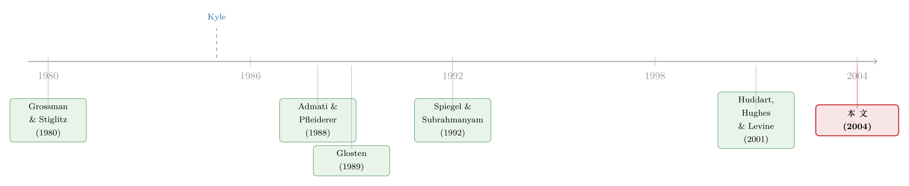

内幕交易者为什么主动「少知道一点」？——当噪声交易者开始算账
本文读的是 Mendelson & Tunca (2004, Review of Financial Studies)：把 Kyle (1985) 里那群「呆头呆脑」的噪声交易者，换成会权衡得失、会缩量的风险厌恶投资者之后，整套均衡都翻了个面——内幕交易者即便能免费获取信息，也会主动克制，不肯把信息打听到底；而被他「收割」的流动性交易者，反而因为他的存在而过得更好。
1 一个被默认了二十年的「群众演员」
凡是学过市场微观结构的人，都知道那个经典的三角关系：一个掌握私有信息的内幕交易者（informed trader），一群做市商（market maker），再加一群噪声交易者（noise trader）。Kyle (1985) 把这三者放进一个连续竞价的舞台，写出了那个被引用到天荒地老的「λ」——价格对净订单流的敏感度，也就是市场深度的倒数。
故事讲得很漂亮。但其中有一个角色，二十年来一直是「群众演员」：噪声交易者。在 Kyle 的设定里，他们交易的数量是外生给定的，雷打不动。无论今天市场上的逆向选择有多严重、无论他们会被内幕交易者「宰」掉多少，他们都照买照卖，毫无知觉。
这当然是为了求解的方便。可只要你停下来想一想，就会觉得别扭：现实里，没有谁是傻子。一个想调仓、想套现、想对冲的投资者，当然知道自己进场要付「价差」这笔买路钱。当逆向选择重到让他血本无归时，他完全可以——少交易一点，甚至不交易。
于是一个很自然的问题冒出来了：如果让这群「群众演员」也学会算账，整出戏会变成什么样？
Mendelson 与 Tunca 这篇 2004 年的 RFS，做的就是这件看似只是「把外生改成内生」的小事。可一旦动了这块基石，后面的结论一个接一个地反转——而所有反转，最后都指向同一个核心:内幕交易者和流动性交易者，并不是单纯的猎手与猎物，而是一种相互依存的共生关系。 猎手会主动收敛食欲，而猎物因为猎手的存在反而活得更好。
2 把三类信息拆开：可获取、不可获取、与公开
要把这个共生关系讲清楚，作者先做了一件很关键的概念手术：把市场上的信息切成三块。
- 公开信息（public information），记为 \(\eta\)：像宏观数据、行业新闻，它独立于内幕交易者的私有信息，随时间持续地「扩散」到市场里，谁都能看到。
- 可获取信息（tractable information），记为 \(\xi\)：内幕交易者可以花成本去获取的那部分信号，正是它制造了信息不对称。
- 不可获取信息（intractable information），记为 \(\varepsilon\)：注意，这一块谁都拿不到——内幕交易者拿不到，做市商拿不到，流动性交易者也拿不到。它的释放完全是外生的，是资产价值里一团无人能消除的不确定性。
资产的清算价值就是这三块之和：
$$v = \xi + \varepsilon + \eta$$
其中 \(\xi,\varepsilon,\eta\) 事前相互独立、都服从正态分布，均值分别是 \(p_0,0,0\)；\(\xi\) 的方差是 \(\Sigma_0\)，而 \(\mathrm{var}[\varepsilon]+\mathrm{var}[\eta]=V\)。公开信息以扩散的方式进入价格：
$$\eta(t) = \int_0^t \sqrt{\nu}\; dW_\eta(s)$$
\(W_\eta\) 是标准布朗运动，\(\nu\) 是它的瞬时方差。
这套切分的精妙之处在于：传统模型里只有「信息不对称」和「噪声」两个旋钮，而这里多出了一个 \(\varepsilon\)——它不涉及任何信息不对称（因为谁都不知道它），却照样能影响价差。 这是本文第一个反直觉的钩子，后面会兑现。
一个直觉对照：\(\xi\) 是「我知道、你不知道」的信息，\(\eta\) 是「我们最后都会知道」的信息，而 \(\varepsilon\) 是「我们谁都不会提前知道」的信息。三者对市场的作用机制完全不同。
3 让流动性交易者算一笔账（模型与均衡）
接着，是这篇文章真正动刀子的地方。
作者把流动性交易者建模为一个连续统上的风险厌恶投资者。每个人有一个异质的即时性价值（idiosyncratic immediacy value） \(u\)——它衡量这个人此刻有多急着成交（也许是要应急用钱，也许是要校正一个偏离目标的组合）。\(u\) 服从均值为 0、方差为 \(\sigma_t^2\) 的正态分布，且跨人跨时独立。每个人用一个均值—方差效用来决定自己买（或卖）多少股 \(z\)：
$$U(w) = E[W] - a\,\mathrm{var}[W], \qquad W = z\big(\mathrm{PV}_{t,1}(v) + u - p(t)\big)$$
\(a\) 是风险厌恶系数，\(\mathrm{PV}_{t,1}(\cdot)\) 是把 \(t=1\) 时刻的价值折回 \(t\) 时刻的现值。这条效用函数，就是 Kyle 模型里那群「群众演员」拿到的台词本：现在他们要在「成交带来的即时性收益 \(u\)」与「被逆向选择吃掉的预期损失 + 承担的方差风险」之间做权衡。
求一阶条件，最优交易量正比于即时性价值：\(z = \gamma(t)\,u\)。这个 \(\gamma(t)\) 是整篇文章的「心脏」——它是流动性交易者每单位即时性价值愿意下的单量，也就是他们对成交的「弹性」。在均衡里它有一个干净的闭式（命题 2 的式 20）：
读懂这一个方程，你就读懂了全文一半。它说：流动性交易者的交易弹性 \(\gamma\)，反比于三样东西——价格冲击 \(\lambda\)、风险厌恶 \(a\)、以及残余的价值不确定性 \(\Sigma^*(t)+V_t\)。
把它和 Kyle 对照一下：Kyle 的噪声交易者相当于 \(\gamma\) 是一个对这些都麻木不仁的常数。而这里，逆向选择一重、风险一大，\(\gamma\) 立刻往下掉，交易者集体缩量。这就是「内生流动性交易」四个字的全部分量。
均衡的其余部分也都解了出来。市场深度参数随时间按贴现率增长，\(\lambda(t)=\lambda_0\,e^{\int_0^t r_s ds}\)（式 19）；内幕交易者的交易强度
$$\beta(t) = \frac{m_t\,\sigma_t^2\,\lambda_0}{\Sigma(t)\big(2\lambda_0 e^{\int_0^t r_s ds}+a_t(\Sigma^*(t)+V_t)\big)^2}$$
而当我们关掉贴现与公开信息扩散（\(r=\nu=0\)）、并让风险厌恶 \(a\) 为常数时，可以得到全闭式解（推论 1）。此时市场不确定性 \(\Sigma(t)=\mathrm{var}[\xi\mid F_t]\) 满足
$$\Sigma(t) = \frac{1}{a}\Big((2\lambda_0+a\hat{\Sigma})^3 - 3a\lambda_0^2 M(t)\Big)^{1/3} - \big(2\lambda_0+a(\hat{\Sigma}-\Sigma_0)\big)$$
$$\gamma(t) = \Big((2\lambda_0+a\hat{\Sigma})^3 - 3a\lambda_0^2 M(t)\Big)^{-1/3}$$
这里 \(\hat{\Sigma}=\Sigma_0+V\) 是资产价值的总方差，\(M(t)=\int_0^t m_s\sigma_s^2\,ds\) 是累计到 \(t\) 的总流动性交易兴趣（total liquidity trading interest）。
均衡存在的条件本身也很有味道（式 17，无贴现时简化为）：
$$M = \int_0^1 m_t\sigma_t^2\,dt > 4\Sigma_0$$
翻译成人话：流动性交易的兴趣必须足够大、大到至少是私有信息不对称（\(\Sigma_0\)）的四倍，市场才撑得住一个均衡。否则，逆向选择会把流动性交易者吓得集体退场，市场直接「干涸」——这恰恰是把交易者内生化之后才会浮现的、Kyle 模型里根本不会出现的崩溃边界。
4 一连串反转
有了这副骨架，反转就一个接一个来了。
反转一：价差里，藏着一块「与信息不对称无关」的成本。 在 Kyle 的世界里，逆向选择价差几乎就等于信息不对称。但命题 3 与推论 1 显示，这里的逆向选择价差还取决于不可获取信息 \(V\)、贴现率 \(r\)、以及公开信息的扩散率 \(\nu\)。其中最反直觉的是 \(V\)：它谁都不知道，不制造任何信息优势，可只要 \(V\) 上升，\(\lambda(t)\) 就上升、流动性下降、逆向选择价差变宽。机制在哪？因为 \(V\) 是流动性交易者要承担的、无法对冲掉的方差风险，它直接压低了 \(\gamma\)——交易者缩量，市场变薄，于是同样大小的内幕单造成的价格冲击更大。换句话说，逆向选择价差应当随证券的总风险（而不仅是信息不对称）递增，这是一个干净的可检验含义。（关于「价差里那块被误读成成本的逆向选择」，可参见《价差是真的，成本却是假的——逆向选择究竟从哪里抬高了「要求回报」》。）
命题 3 的其余比较静态也很整齐：
- 贴现率 \(r\)、潜在流动性兴趣 \(m\) 或 \(\sigma^2\)、公开信息扩散率 \(\nu\) 中任一上升，\(\lambda(t)\) 都下降（更流动）；
- 风险厌恶 \(a\) 上升，\(\lambda(t)\) 上升（更不流动）；
- 信息不对称 \(\Sigma_0\) 上升，\(\lambda(t)\) 与 \(\Sigma(t)\) 都上升；
- 总方差里的 \(V\) 上升，\(\lambda(t)\) 上升。
其中「利率越高、市场越流动」是个有意思的市场层面预言：贴现率上升，未来的风险对流动性交易者就没那么要紧，他们把交易往前挪、早期交易更密集，市场深度因此更高。作者甚至顺手给出了一个识别这条机制的真实抓手：美国 Form 10-K 的申报时限在 1970 年前是财年结束后 120 天，后来缩短到 45 天；外国公司用 Form 20-F、限期 6 个月；季度披露要求 1970 年才确立、1981 年扩充——这些披露频率/时限的差异，正好可以当作「私有信息存活期」的代理变量，用来检验利率如何影响流动性。
反转二：效率比噪声交易模型「以为」的更低。 因为流动性交易者会缩量，市场上能掩护内幕交易者的「噪声」其实更少，价格信息扩散得更慢。作者明确指出：用外生噪声交易的模型，会系统性地高估信息融入价格的速度。
反转三：被收割的人，反而更好。 这是全文最漂亮的一步。流动性交易者在金钱上确实是净亏给内幕交易者的——这是他们买「即时性」付的费用。但内幕交易者的交易会把私有信息释放进价格，降低了流动性交易者面对的价值不确定性（也就是 \(\gamma\) 公式里的 \(\Sigma^*+V\) 那一项里的 \(\Sigma^*\) 在下降）。风险变小，让一部分流动性交易者的福利净增加。于是内幕交易者其实提供了一项有价值的服务，而这项服务的报酬，正是他自己的交易利润。这给「内幕交易到底是好是坏」的老争论（Manne 1966；Glosten 1989；Fishman & Hagerty 1992）提供了一个可以量化权衡的框架。
反转四（核心中的核心）：内幕交易者会主动「装傻」。 当信息获取也内生化——内幕交易者自己决定要花多少成本去获取多少 \(\xi\)——一件传统模型里绝不会发生的事出现了：即便信息获取成本为零，他也可能选择不去获取全部可得的信息。 在 Kyle 式的噪声交易模型里，免费的信息当然是多多益善。可在这里，他知道：自己越「全知」，逆向选择越重，\(\gamma\) 越低，流动性交易者越是缩量甚至跑光——而他正是靠这些人的交易来掩护和变现的。多打听一分，等于亲手把自己的猎场赶空一分。于是他主动克制。
更进一步，作者证明了 \(\varepsilon\) 与信息获取策略之间的相互作用：其他条件相同，不可获取信息 \(V\) 越多，内幕交易者获取的可获取信息 \(\xi\) 越少。 当允许他向市场披露部分私有信息时，参数空间被切成两块——\(V\) 小时，他获取全部信息并释放大部分（此时自愿披露甚至改善效率）；\(V\) 大时，他只获取一部分、且一点都不释放。结论于是水落石出：不可获取信息通过同时抑制信息的获取与释放，拉低了市场效率。
最后一笔锦上添花：当信息获取行为不可观测时，内幕交易者的利润会下降。于是他有动力去雇一个独立审计师来监督并向市场报告他的信息获取投入——而这么做不仅利己，还顺带让流动性交易者也受益。这把一个看似纯微观结构的模型，悄悄接到了公司治理与信息披露的议题上。
5 文献脉络
把这篇文章放回它的家谱里，它的位置就格外清楚了。
最早，是 Grossman & Stiglitz (1980) 那个著名的悖论：如果价格已经反映了一切信息，谁还有动力去花钱获取信息？信息获取的内生性，从那时起就是这条线的母题。真正搭起舞台的是 Kyle (1985)——连续竞价、线性均衡、内幕交易者与外生噪声交易者，从此成为标准范式。
接着，一批工作在 Kyle 的地基上加盖：Admati & Pfleiderer (1988) 讲日内的量价模式，Holden & Subrahmanyam (1992)、Foster & Viswanathan (1996)、Back & Pedersen (1998) 把长寿命私有信息与多个内幕交易者之间的竞争做深——但噪声交易始终是外生的。
然后，一个自然的问题是：能不能让那群不知情的人也「动起来」？Glosten (1989) 第一个把带对冲动机的流动性交易者引入信息不对称市场；Spiegel & Subrahmanyam (1992) 在单期 Kyle 模型上让不知情者内生地决策——但他们的动机是对冲已有头寸。本文与之分道扬镳的关键，正在这里：本文的流动性交易者不是来对冲的，而是来满足异质的即时性偏好的，这一动机差别对结论影响巨大。

而在「信息释放」这一支上，最直接的对手是 Huddart, Hughes & Levine (2001)：当内幕交易者被强制披露每轮交易量时，他会用一种「掩饰（dissimulation）」策略往交易里掺随机噪声，结果加速了价格发现、压低了内幕利润。本文的反差恰好相反——在这里，信息释放反而让内幕交易者更好过，因为它诱使流动性交易者增加交易。（关于「越无知越愿意把信息让给对手」的另一种 Kyle 式反转，可参见《谁把信息让给了对手？》；关于动态市场里「越多人知情反而越想知情」的张力，可参见《当「噪声」开始说话》。）
这篇文章的位置，于是可以一句话概括：它是第一个把「会算账的流动性交易者」与「会算计的信息获取」同时塞进 Kyle 框架、并解出闭式均衡的工作。
6 评论与延伸（Q&A + 研究方向）
(a) 几个可能的疑问
Q：把噪声交易者换成内生交易者，不就是 Spiegel & Subrahmanyam (1992) 早做过的吗？这篇新在哪？
新在「动机」与「期数」。S&S 的不知情者是来对冲已有头寸的，且是单期；本文的流动性交易者是来满足异质即时性偏好的，且嵌进了多期/连续时间的动态框架。作者在结语里特别强调，这一动机差别对结论影响重大——比如「流动性交易者从内幕交易中获益」「内幕交易者主动克制信息获取」这些结论，都依赖于即时性这种私人偏好，而非对冲需求。
Q：「内幕交易者免费也不愿全知」听起来很反直觉，会不会只是模型的人为产物？
它确实是内生流动性交易的直接产物，但机制是稳健的：信息越多 → 逆向选择越重 → \(\gamma\) 越低 → 流动性交易者缩量 → 内幕交易者的掩护与变现空间越小。只要流动性交易者对逆向选择敏感（即 \(\gamma\) 随 \(\lambda\) 下降），这个力量就在。它不是数值巧合，而是 \(\gamma\) 公式分母里那个 \(2\lambda\) 项的必然推论。
Q：「流动性交易者获益」和「他们净亏钱给内幕交易者」不是自相矛盾吗？
不矛盾，因为这是两个维度。金钱上，他们确实是净支付方（这是即时性的价格）。但福利是「期望效用」，里头还有风险这一项。内幕交易把私有信息压进价格，降低了他们成交时面对的价值方差，风险下降带来的效用改善，对一部分人足以盖过金钱损失。猎物为猎手付费，但也买到了一份「降险」服务。
Q：那个「\(M>4\Sigma_0\)」的存在条件，有没有现实含义？
有，而且很直观：它是市场不至于「逆向选择死亡螺旋」的临界线——流动性交易兴趣必须至少是信息不对称的 4 倍。当一只证券信息极度不对称、或流动性需求枯竭时，均衡可能根本不存在，市场会冻结。这与危机时部分市场「无人接盘」的现象在精神上相通（参见《差点死掉的那个市场：一场公司债流动性危机的微观解剖》）。
Q：「不可获取信息 \(V\) 抬高价差」会不会和「信息越多价差越大」的常识打架？
不打架，因为 \(V\) 抬高价差走的不是信息不对称渠道，而是风险渠道。\(V\) 是谁都消除不了的方差，它压低流动性交易者的 \(\gamma\)、让市场变薄，于是同等内幕单的价格冲击更大。这正是本文的贡献之一：把价差拆出了一块「与信息不对称无关、只与总风险有关」的成分。
Q：审计师那个结论是不是过度延伸了？
它确实是模型的一个推论而非实证发现：当信息获取不可观测时内幕利润下降，故他有动力雇一个独立审计师把投入「公示」出来，且此举帕累托改进。它的价值在于把微观结构和披露/治理接上了头，但在现实里「审计师监督信息获取」并无直接对应制度，应当当作理论含义而非可直接检验的预测来读。
(b) 几个可能的研究问题与提案
-
把这套框架搬到公司债的做市市场上。 【经济故事】公司债的逆向选择与流动性紧密纠缠，且交易者（保险公司、债基）的即时性需求高度异质——这正是本文 \(\gamma\) 异质性的天然舞台。本文预言「逆向选择价差随总风险（含不可获取的 \(V\)）递增、随利率上升而下降」，在公司债的横截面里可以直接检验。 【可行性】中。需要 TRACE 逐笔成交 + 评级/久期/发行规模做总风险代理 + 利率环境。识别上可借鉴本文提示的「披露频率差异 ≈ 私有信息存活期」的思路。难点是把 \(V\)（不可获取信息）与 \(\Sigma_0\)（信息不对称）在实证上分离开。
-
外资持有人是否改变了「流动性交易者的 \(\gamma\) 弹性」？ 【经济故事】外资往往被认为信息劣势更大、即时性需求模式不同。若把外资视作一类 \(a\) 或 \(u\) 分布不同的流动性交易者，本文模型预言他们的进入会改变市场深度 \(\lambda\) 与价格发现速度。 【可行性】中。可结合「可投资度」这类自然实验（参见《外资能买的股票，为什么更「抖」？》）。识别靠可投资度的外生变动，难点是把外资的「信息渠道」与「流动性渠道」拆开。
-
危机期的「\(M>4\Sigma_0\)」临界线，能不能事前测出来？ 【经济故事】本文给了一个清晰的市场冻结边界。如果能用流动性兴趣 \(M\) 与信息不对称 \(\Sigma_0\) 的实时代理构造一个比值，它也许能当作市场「即将枯竭」的预警指标。 【可行性】中偏低。\(\Sigma_0\) 难以直接观测，需要从价差分解或 PIN 类指标反推；但作为危机预警的探索性研究，思路是 doable 的。
-
「内幕交易者主动少获取信息」有没有可观测的影子？ 【经济故事】本文预言：不可获取信息 \(V\) 越大，知情者获取的私有信息越少、越不愿披露。这意味着在「价值更不透明」的资产上，知情交易的强度 \(\beta\) 反而更低。 【可行性】低到中。需要一个能度量「知情交易强度」的代理（如 VPIN、订单流毒性）并与资产不透明度的外生差异配合，识别难度高，但概念上是本文最锐利、也最少被检验的一条预测。
7 我的判断
这篇文章的贡献，我认为不在于解出了又一个 Kyle 变体，而在于它点破了一件被默认太久的事：当我们把噪声交易者写成「外生」，我们其实悄悄假设了一群不会被逆向选择吓退的人——而这个假设，恰恰抹掉了市场最有意思的反馈回路。 一旦把这条回路接上，内幕交易者的「自我克制」、流动性交易者的「受益于被收割」、以及那块「与信息无关」的风险价差，全都自然涌现。它把内幕交易从一个零和的掠夺，重新框定成一种有定价、可量化的共生服务，这一点对「内幕交易的成本与收益」之争是实打实的推进。
要说担忧，主要有两条。其一是可检验性：这是一篇纯理论文章，核心预测（免费也不全知、\(V\) 抬高价差、利率与流动性同向）虽然清晰，但 \(\Sigma_0\)、\(V\)、\(\gamma\) 在数据里都难以干净地分离，模型与现实之间还隔着好几层代理变量。其二是线性—正态—均值方差这套求解友好的设定，承担了相当多的解析便利；尤其「流动性交易者获益」这种福利结论，对效用形式与风险定价方式可能并不稳健，换一套偏好未必还成立。
我接下来最想看到的，是有人把这套「内生流动性交易 + 内生信息获取」的双内生结构，拿到一个真有微观数据的市场（公司债、外汇、或带逐笔订单流的股票）里去，哪怕只检验其中一条预测——比如「不透明资产上知情交易强度反而更低」——也足以让这篇二十年前的理论，第一次真正照进现实。（顺带一提，关于「内幕交易者其实是在挑时机、而非天生全知」的另一条思路，可参见《你以为内幕交易者「天生」知道答案，可她其实在挑时机下注》。）
参考文献
Admati, A., and P. Pfleiderer, 1988. A Theory of Intraday Patterns: Volume and Price Volatility. Review of Financial Studies 1(1), 3–40.
Amihud, Y., and H. Mendelson, 1986. Asset Pricing and the Bid-Ask Spread. Journal of Financial Economics 17(2), 223–249.
Bagehot, W., 1971. The Only Game in Town. Financial Analysts Journal 27(2), 12–14.
Garman, M., 1976. Market Microstructure. Journal of Financial Economics 3(3), 257–275.
Glosten, L. R., 1989. Insider Trading, Liquidity, and the Role of the Monopolist Specialist. Journal of Business 62(2), 211–235.
Glosten, L. R., and P. R. Milgrom, 1985. Bid, Ask and Transaction Prices in a Specialist Market with Heterogeneously Informed Traders. Journal of Financial Economics 14(1), 71–100.
Grossman, S. J., and J. E. Stiglitz, 1980. On the Impossibility of Informationally Efficient Markets. American Economic Review 70(3), 393–408.
Holden, C. W., and A. Subrahmanyam, 1992. Long-Lived Private Information and Imperfect Competition. Journal of Finance 47(1), 247–270.
Huddart, S., J. Hughes, and C. Levine, 2001. Public Disclosure and Dissimulation of Insider Trades. Econometrica 69(3), 665–681.
Kyle, A. S., 1985. Continuous Auctions and Insider Trading. Econometrica 53(6), 1315–1335.
Mendelson, H., and T. I. Tunca, 2004. Strategic Trading, Liquidity, and Information Acquisition. Review of Financial Studies 17(2), 295–337.
Spiegel, M., and A. Subrahmanyam, 1992. Informed Speculation and Hedging in a Noncompetitive Securities Market. Review of Financial Studies 5(2), 307–329.